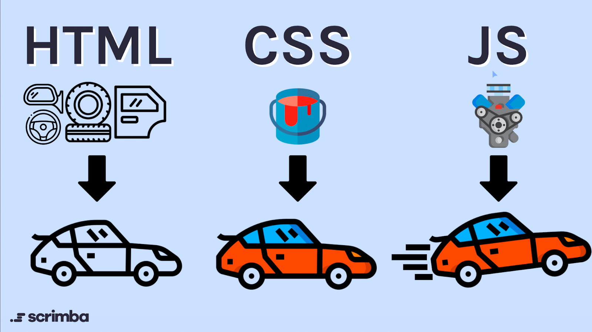

Web Browser Concepts
Web browsers are software applications that enable users to access, retrieve, and display content on the World Wide Web. They interpret and render HTML, CSS, and JavaScript to present web pages to users.
Details
A Web browser is a client side application. It uses HTTP and HTTPS to send requests to web servers over the internet. Web servers respond to these requests with a raw file containg HTML, CSS, and JavaScript. The web browser interprets this raw data and renders it into a visual display that can be viewed from the user's screen.
Web browsers use Uniform Resource Locator(URL) to locate specific webpages. The browser sends the URL to Domain Name System servers (DNS) to locate the IP address of the server that holds the web file. Web Browsers establish reliable connections to web servers using Transmission Control Protocol (TCP) or the more modern SSL/TLS.
A web browser uses HTML to understand the structure of a page, turning tags into elements like headings, paragraphs, images, and links. Web browsers also use CSS to apply visual styling like colors, fonts, spacing, layouts, and animations to the structured HTML content. Finally, JavaScript is used to add behaviors to the website, making the webpage interactive for the user. The browser combines these elements to render a complete, functional webpage on your screen